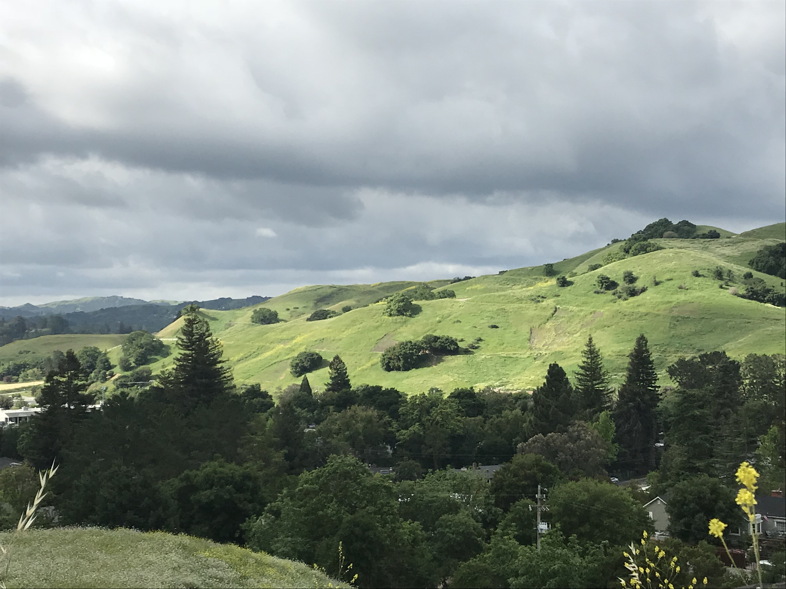
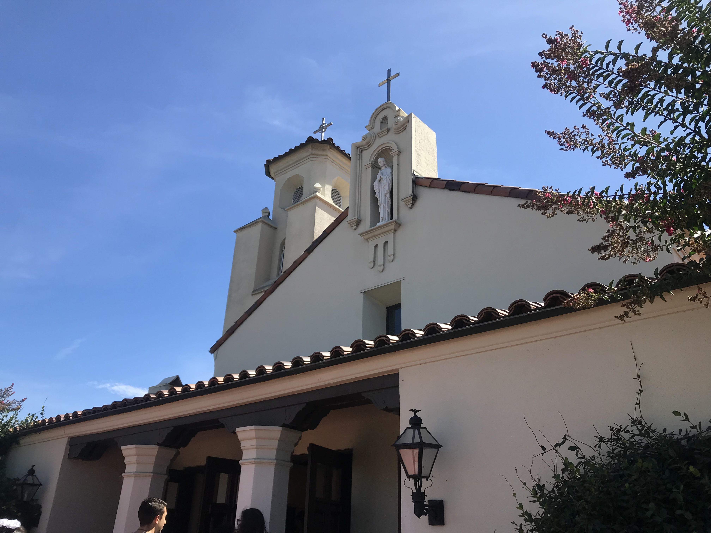
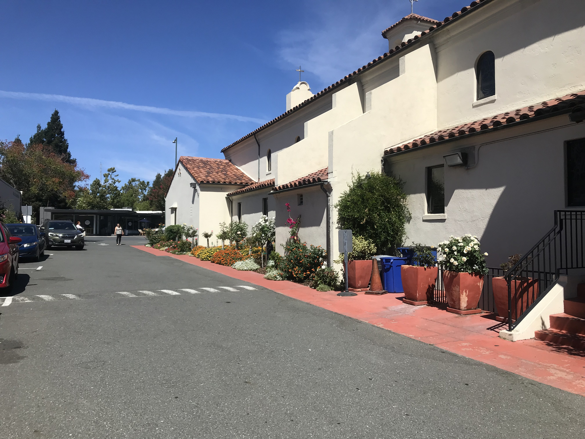
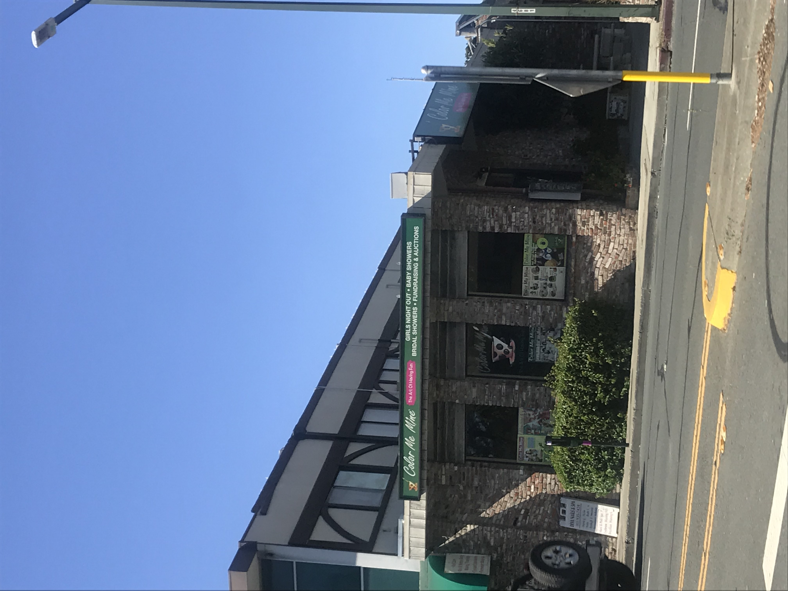
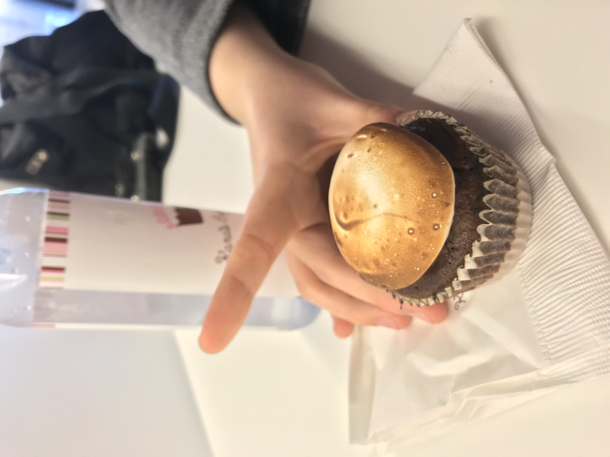
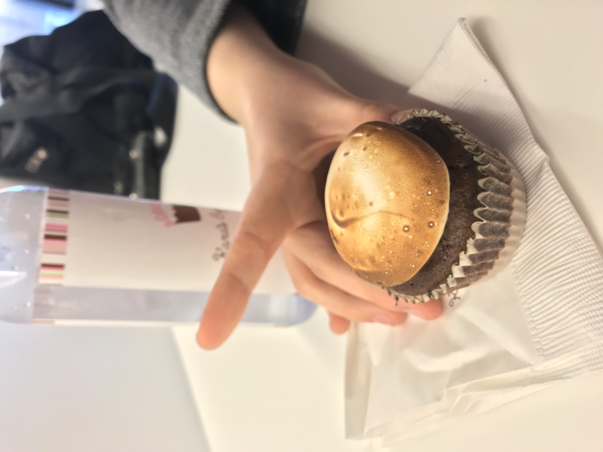
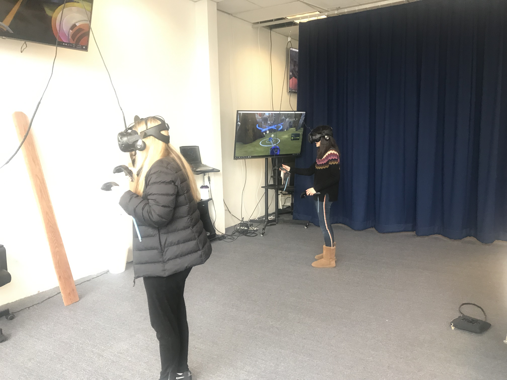

Me and my family live in Walnut Creek which is a suburb that is close to Oakland. In 1849,the first settler was a man called William Slusher settled on a communnity called The Corners who later renamed the town Walnut Creek. The town was named Walnut Creek because there is a creek that cuts through downtown. The towns population grew with the arrival of the Southern Pacific Railroad in 1891 and the Sacramento Northern Railway. Walnut Creek contains more open space than any other community in California. Every now and then you can see deer, you can hear coyotes and flocks of turkeys trying to cross the street. Today the town is known for its Shopping Center and many good restaurants. During the winter, when it gets super cold, sometimes you can see snow on the peak of Mt. Diablo. Walnut Creek is also the birthplace of actor Greg Sestero who appeared in the cult movie The Room.
The Ruth Bancroft Gardens is a public botanical dry garden that was established by Ruth Bancroft. The garden started out as a fruit farm owned by Bancroft’s husband’s grandfather, Hubert Howe Bancroft who grew walnuts and pears but was expanded one Bancroft planted her collection of succulents and dry-growing plants. Today, the garden is home to 2,000 succulents and plants that are native to Mexico, South Africa, Chile, and Australia. The dry garden is also a non-profit organization to preserve the succulents but also allows people to rents space for private events. A lot of local sculptors have donated their work to gardens. Just recently Ruth Bancroft passed away in 2017.


St. Marys Catholic Church is the church me and my family go to to attend mass and worship. On the back of the church, there is a K-8th grade private school and right now they are building a chapel at the back where special ceremonies can be held. The church is very beautiful inside, it has stained glass windows and on the exterior, and my favorite part is the choir because the ladies that sing there are really good. We usually attend the 1 pm service in Spanish but sometimes, we also attend the 6 pm service in English if we can’t make it to the 1 pm.
 Color Me Mine is a pottery studio where you can buy a ceramic whether it is a bowl, a statue, or piggy bank and paint it. After you pay for it, you choose the colors you want to paint your ceramic with and after you are done painting, you leave your creation at the studio so that they can glaze and put it in the oven. After a week, they will let you know you can pick it up. This place is ideal if you want to throw a birthday party.
Kara's Cupcakes is a pastry shop that specializes in making beautiful cupcakes with creamy fillling. What I also really love about the place is their interior design. Their walls are pink and their furniture is sleek and it feels really elegant. If you want to order for a birthday party, they will make a message with the frosting of the cupcakes. The first time I went there I was with my friend Sabine went there and we ate cupcakes. They also serve vegan and gluten-free cupcakes.
 

GamedayVR is a place where they have screens hooked up with VR headsets where you can play virtual reality on your own or with your friends. You pay to play by the hour and they have computers where you can play Fortnite while you wait for your turn. You can throw your birthday party in there and play with your friends.
